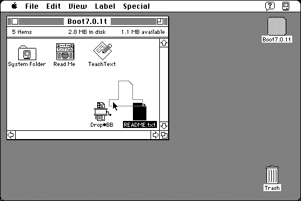

Download
Drop_BB.zip (16K) Drop•BB 1.0 repackaged into a zipped hfs disk image and checksum file. The disk image can be mounted with Mini vMac.
Drop_BB.sit.hqx (16K) Drop•BB 1.0 in the original format.
copyright: Scott Howlett and Chris Borton
mod date: Jul 12, 1995
license: free for non-commercial use
last known url
(gone)
“Makes any text file dropped on it into a BBedit text file.” Simpler than “TextChanger”. Requires System 7 or later.

If you find these downloads useful, please consider helping the Gryphel Project, which hosts them.
Here are the md5 checksums for the downloads, signed with Gryphel Key 5:
--------- GRY SIGNED TEXT --------- 74312a8dc3934e1e749bf3241b2195cb Drop_BB.zip ab3424f0502b718210cf02589d7270fa Drop_BB.sit.hqx ------- BEGIN GRY SIGNATURE ------- Gry/4Xa8CFcUzxdN/HJ4U045EI9M843S4yVcLuhis7U2aWMnKrzAOm+rgo1cwX9G Ub4JjHcAz6wLxdxbTTueOqdaeJ5WKCnqUkmUZ56Mpj74weZvxalqo4cS0ureG57Y 6CwQlyOzFYlLasYHSVXOx6i+i0pUOWWzkcVM8gEOQr88iSOU1hy8OjQ6JI6tKT4m -------- END GRY SIGNATURE --------